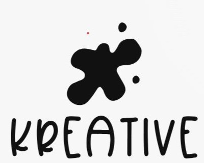
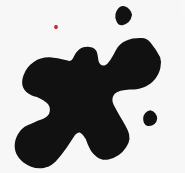

Somos un equipo apasionado por el diseño web y la innovación tecnológica. Nuestra misión es transformar ideas en soluciones digitales impactantes. Nos especializamos en el desarrollo de sitios web modernos, funcionales y optimizados para brindar la mejor experiencia de usuario.
Kreative nació de un grupo de estudiantes de Ingeniería en Tecnologías de la Información de la Universidad Tecnológica de Escobedo. Compartíamos una visión común: aprovechar nuestras habilidades para crear soluciones digitales innovadoras. Todo comenzó como un proyecto universitario, donde trabajamos juntos en el desarrollo de pequeñas páginas web para eventos y negocios locales.
Con el tiempo, nos dimos cuenta de que nuestra pasión iba más allá de un simple trabajo académico. Aprendimos sobre diseño UX/UI, ciberseguridad y desarrollo web, y con cada nuevo proyecto, nuestra experiencia y reputación crecían. Decidimos formalizar nuestra idea y dar vida a Kreative, una empresa comprometida con la excelencia y la creatividad.
Desde el diseño de interfaces hasta la seguridad web, brindamos servicios de alta calidad adaptados a las necesidades de nuestros clientes. Nuestro objetivo es ayudar a las empresas a destacar en el mundo digital mediante soluciones personalizadas y efectivas.
En Kreative, contamos con un equipo multidisciplinario compuesto por expertos en diversas áreas del desarrollo web y la tecnología:
En Kreative, no solo diseñamos páginas web, creamos experiencias digitales. Cada proyecto es una oportunidad para innovar y brindar un producto que refleje la identidad de nuestros clientes. Nos esforzamos por ofrecer un servicio personalizado, asegurándonos de que cada detalle esté alineado con las necesidades y expectativas de quienes confían en nosotros.
